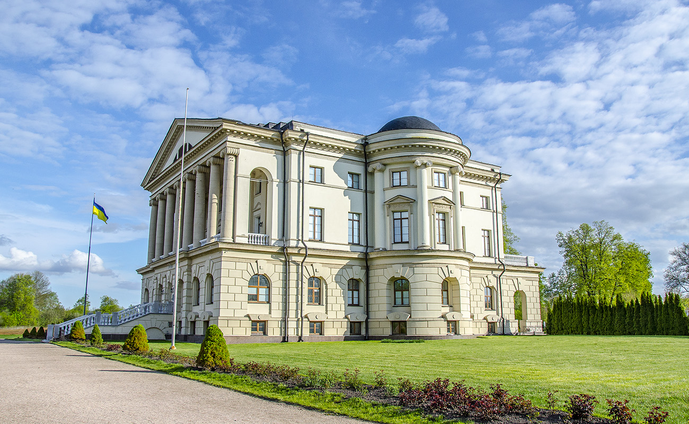
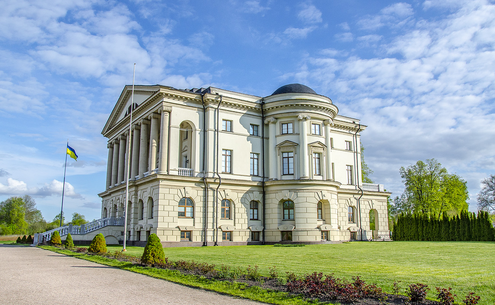
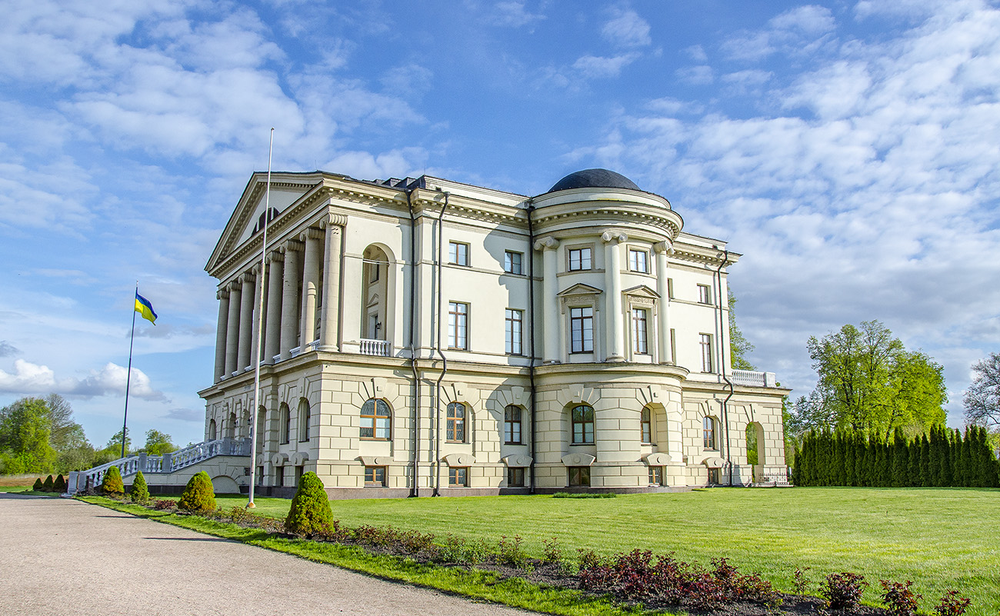
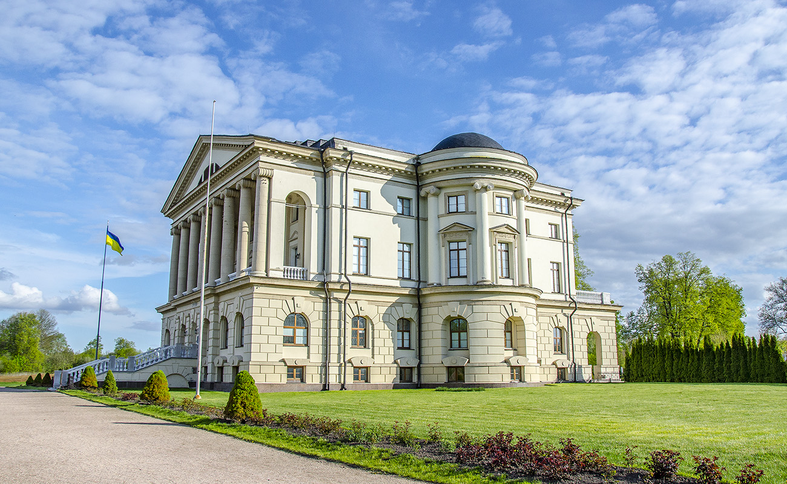

У 1799-1803 рр. на замовлення Кирила Розумовського за проектом шотландського архітектора Чарльза Камерона на околиці Батурина було споруджено великий палацово-парковий комплекс.
Однак після смерті графа будівництво припинили. Син Кирила, Андрій Розумовський проживав у Відні. Замість нього тут залишався управитель. Саме він, за однією з версій, підпалив палац, щоб приховати сліди своїх крадіжок.
Занепад тривав більше сторіччя. У другій половині ХХ століття було здійснено кілька спроб реставрації цього палацу, але її так і не вдалося завершити. В 2002 році Кабінетом Міністрів України була ухвалена комплексна програма відбудови пам’яток заповідника «Гетьманська столиця», яка була успішно реалізовано протягом останніх п’яти років. У серпні 2009 року було закінчено масштабну відбудову цієї пам’ятки архітектури, зокрема, відбудовано палацовий комплекс та повністю оновлено експозиції. Під час реставрації будівлі інтер’єрну частину відтворювали за аналогами робіт Камерона в Павловську і Царському селі.
Наразі палац налічує 55 кімнат. Значну частину нинішньої картинної колекції Батурин отримав у подарунок від Львівської галереї. Тут постають портрети майже всіх українських гетьманів: Вишневецький, Хмельницький, Дорошенко, Конашевич-Сагайдачний, Многогрішний, Брюховецький та інші. Кирило Розумовський мав чисельну бібліотеку, яка налічувала більше дві тисяч томів. Для її обслуговування він навіть виписав з Франції бібліотекаря-упорядника. Граф мріяв передати своє літературне надбання Руссо, та їхня зустріч так і не відбулася, і згодом бібліотека була розпорошена.
До наших днів дійшла лише нотна збірка. А Розумовський був дійсно поціновувачем гарної музики, товаришував з Моцартом і Бетховеном. Останній присвятив графу три свої квартети.
.webp) 


